Manual de JavaDiKt Mirai 1.1.5
Manual de JavaDiKt (Mirai 1.1.5)
Copyright Luis A. Arce, Licenciado bajo Creative Commons Attribution-ShareAlike 2.5
1.Manejo del
programa
La interfaz del programa
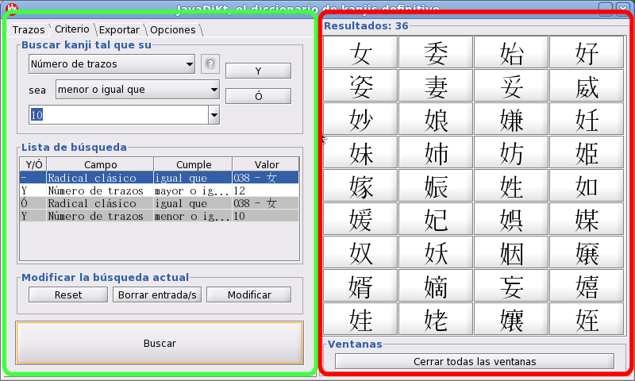
La interfaz de javaDiKt se divide en dos partes:
-
La parte lateral izquierda (rodeada en verde) es
el panel de control. La interacción entre el usuario y el programa se produce principalmente desde
esta zona. Desde aquí se pueden realizar búsquedas por grafo, por composición de criterios,
exportar la búsqueda actual y cambiar la configuración del programa.
-
La parte lateral derecha (rodeada en rojo) es el panel de resultados. En este panel
aparecerán los resultados de las búsquedas y podrá accederse a la información específica de cada
Kanji simplemente pinchando sobre él. El botón "Cerrar todas las ventanas" cerrará todas las
ventanas abiertas de información, ya sean de kanjis, radicales o orden de
trazos.
El panel de control
El control del programa del programa vienen separada en cuatro paneles accesibles mediante
pestañas.
El panel de búsqueda por criterio
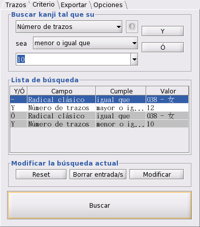
Pestaña criterio
Desde el panel de búsqueda por criterio, accesible desde la pestaña "Criterio"
pueden construirse las descripciones o "queries" que nos sirven para localizar un kanji o grupo
de kanjis en concreto. Consta principalmente de tres paneles:
-
El cuadro de construcción de
búsquedas, que nos permite añadir nuevas descripciones para la búsqueda. Está compuesto por tres
menús desplegables y dos botones:
-
El menú desplegable "campo"
sirve para elegir la característica del kanji que nos servirá para buscarlo. Puede
obtenerse una breve explicación del significado del campo pulsando el botón "?" a la derecha del
menú desplegable(sólo si está habilitado) o consultando la sección "Significado de los campos de
los kanjis").
-
El menú desplegable "cumple",
elegiremos la relación que debe cumplir el campo elegido con respecto a un valor que
podremos elegir o escribir en el tercer menú, el de "valor".
-
El tercer menú es el de "valor".
El menú "valor" será desplegable o editable en función de la opción elegida en el menú "campo". En
este menú, podemos elegir la característica que tendrá que cumplir el campo elegido.
-
Los botones "Añadir/Y" y "Ó"
sirven para añadir el criterio a la lista de búsqueda una vez elegido.
-
La lista de búsqueda, que describe la
búsqueda actual, y el panel de modificación de búsqueda, que permite modificar la búsqueda actual.
En éste último hay tres botones:
-
"Reset": borra la lista de
búsqueda poniéndola en blanco.
-
"Borrar Entradas": borra las
entradas seleccionadas(una a una o varias a la vez seleccionando con CTRL+botón izquierdo o
SHIFT+botón izquierdo).
-
"Modificar": modifica la primera
entrada seleccionada. Al pulsar modificar, la entrada será modificada al pulsar de nuevo los
botones "Y"/"Añadir" o "Ó" del cuadro de construcción con los valores actuales de los menús
desplegables de "campo", "cumple" y "valor". Puede cancelar la modificación pulsando de nuevo
"Modificar".
-
El botón "Buscar" borra todos los kanjis del panel de búsqueda pertenecientes a la
búsqueda anterior y ejecuta la búsqueda actual, presentando todos aquellos que cumplen las
condiciones definidas en la lista de búsqueda.
El proceso de búsqueda de un kanji consiste, en definitiva, en añadir una serie de frases al
panel de búsqueda que juntas conforman una expresión en lenguaje natural que define un kanji o grupo
de kanjis. Supongamos que buscamos los kanjis que cumplen la siguiente frase:
Buscar el/los kanji/s tal que su número de trazos sea 11 o 12 y que su
lectura sea "ショウ".
Esta frase puede expresarse de dos maneras en JavaDiKt:
-
Buscar el/los kanjis/s tal que [su
número de trazos sea mayor
que 11] y que [su número de trazos sea menor
que 12] y que [su lectura sea igual
que "ショウ"].
-
Buscar el/los kanji/s tal que [su número
de trazos sea igual que 11] y que su [lectura sea sea
igual que "ショウ"] o que [su número
de trazos sea igual que 12] y [ su lectura
sea igual que "ショウ"].
Ambas descripciones pueden introducirse en JavaDiKt si vamos añadiendo uno a uno los
estamentos separados por "y" o "o", donde el texto en rojo se selecciona en el menú
desplegable de "campo", el amarillo en el de "cumple" y se escribe el texto en azul en
el de "valor".

Buscando lo mismo de dos formas distintas
Las dos descripciones son iguales y su búsqueda devolverá los mismos resultados. La
diferencia fundamental entre las dos búsquedas es que la primera describe una serie de condiciones
que al ejecutarse devolverá un único conjunto de kanjis que las cumpla, mientras que en en la
segunda se hacen dos búsquedas (la del del texto con fondo blanco y la del texto con fondo gris) y se
unen los resultados. Al igual que en el ejemplo, JavaDiKt también distingue las disyunciones en la
lista de búsqueda dividiendo a los conjuntos de entradas por colores, donde entradas contiguas con
el mismo color limitan el número de resultados y entradas contiguas con distinto color aumentan el
número de resultados.
El panel de
búsqueda por grafo
Desde el panel de búsqueda por grafo pueden añadirse a la lista de búsqueda condiciones para
buscar kanjis a través de su dibujo o forma.
La
representación de kanjis según el modelo grafo-asterisco
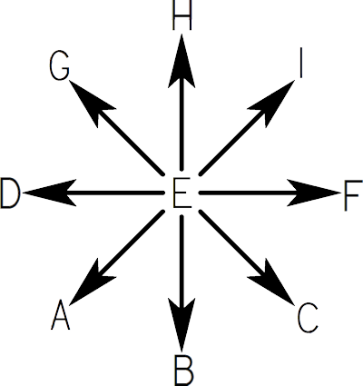
Lineas posibles en una representación grafo-asterisco
El modelo grafo-asterisco es una forma de representar un kanji según el orden de dibujo de
sus lineas y trazos. En él, se divide a cualquier tipo de trazo en un conjunto posible de 8 tipos de
líneas según las direcciones de un asterisco, asignándole a cada una una letra de la A a la H. Por
ejemplo, la línea tipo G empieza va desde la parte inferior derecha hasta la parte superior
izquierda, mientras que la de tipo C va de la parte superior izquierda hasta la parte inferior
derecha. El tipo E representa un punto y generalmente no se usa.
Así pues el primer paso para representar un kanji mediante el modelo grafo-asterisco es separarlo
ordenadamente por líneas que se trazarían sin levantar la mano del papel, y luego convertir
cada trazo en un conjunto de líneas asterisco. La primera línea de cada trazo se pone en mayúsculas
y el resto en minúsculas.
La representación grafo-asterisco obvia la posición relativa de los trazos entre sí, pero
hace necesario conocer su orden. JavaDiKt usa internamente este tipo de representación para manejar
las búsquedas relacionadas con grafos, e incluso es posible desde la ventana de criterio buscar
kanjis directamente por su cadena grafo-asterisco.
Por ejemplo, consideremos el kanji de cuatro, 四, la forma de obtener su cadena
grafo-asterisco sería:
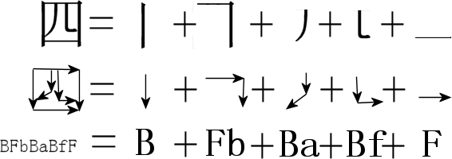
Buscando
kanjis mediante su trazo

Pestaña de búsqueda por grafo
Desde la pestaña "Trazos" podemos añadir criterios sobre kanjis a la lista de búsqueda
usando el modelo grafo-asterisco. Para ello dibujaremos en el panel de dibujo(arriba a la izquierda)
el kanji a buscar usando líneas rectas con el ratón. Si pulsamos con el botón
izquierdo en alguna parte del panel, indicaremos el punto de partida de una línea recta, que acabará
al pulsar de nuevo el botón derecho en otro punto del panel. Si hemos iniciado el dibujo de
una línea y volvemos a pulsar el botón izquierdo en vez del derecho, la línea acabará en el
punto del panel donde el botón ha sido pulsado y una nueva línea empezará en dicho punto. Mientras
sigamos pulsando el botón izquierdo en vez del derecho iremos encadenando líneas hasta que pulsemos
el botón derecho.
Una línea o serie de líneas que empiecen en un punto del panel pulsando primero el
botón izquierdo y finalmente el botón derecho serán interpretadas por el programa como un trazo. Así
pues, cuando se pulse el botón "Añadir"/"Y" o "Ó" del panel "Añadir
búsqueda" los trazos serán convertidos por orden de escritura en una cadena de trazos
grafo-asteriscos, y añadidos a la lista de búsqueda siempre con la condición "igual que".
Podemos modificar el dibujo actual usando tanto el ratón como los botones del panel
"Modificar"
-
Botón "Borrar dibujo" o botón
central o botón del scroll del ratón sobre el panel de dibujo: borra completamente el panel
de dibujo dejándolo en blanco.
-
Botón "Borrar última línea" o giro
del scroll del ratón hacia abajo sobre el panel de dibujo: borra en orden inverso al
dibujado la última linea pintada, pertenezca o no al dibujo de un trazo. Esto quiere decir, por
ejemplo, que si la última línea pintada pertenece a un trazo de tres líneas, al girar el scroll del
ratón este trazo pasará a tener dos líneas, que serán la penúltima y la antepenúltima. Cualquier
nueva línea dibujada en este punto pertenecerá a un nuevo trazo.
-
Giro del scroll hacia arriba sobre el
panel de dibujo: reconstruye la última línea borrada y la añade al trazo al que pertenecía. Esto
significa, por ejemplo, que si teníamos un trazo de tres líneas y borramos y recuperamos una, el
trazo seguirá teniendo tres líneas.
-
Botón "Borrar último trazo": borra el último grupo de líneas que conformaba un trazo.
Combinando búsquedas
mediante criterios y grafos
Supongamos que hacemos un dibujo en el panel de dibujo y pulsamos el botón "Añadir" y
después "Buscar", de forma que en la lista de búsqueda haya una sola entrada. En el panel de
resultados aparecerá una lista de kanjis cuyo representación en grafo-asterisco sea similar
al del kanji dibujado. Para el ejemplo del kanji anterior, el de 四, después de ejecutar quedaría la
pantalla siguiente:

JavaDiKt ha devuelto los kanjis cuya representación grafo-asterisco se parece más al del
kanji dibujado, que ha sido traducido desde el cuadro de dibujo a la lista de búsqueda como "Grafo
asterisco igual que BFbBaBfhF". Si cambiamos ahora a la pestaña de criterio, podremos comprobar que
la lista de búsqueda entre ambas ventanas se conserva, lo que significa que podemos hacer
combinaciones entre búsquedas por criterios y por grafos para limitar las búsquedas. Podemos
añadirle, por ejemplo, que además su significado sea igual que "cuatro", refinando así aún más la
búsqueda.

El
panel de exportación de búsqueda
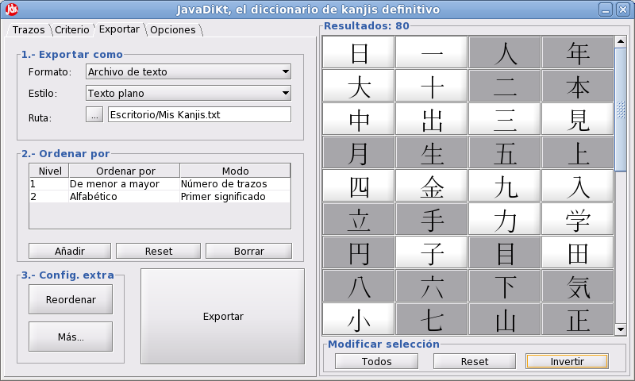
Interfaz de exportación
Desde el panel de exportación de búsqueda, en la pestaña "Exportar", pueden
exportarse todos o parte de los kanjis que estén en el panel de búsqueda ordenados automática
o manualmente según distintos estilos y formatos. El objetivo de esta pestaña es que el usuario
pueda exportar los resultados de sus búsquedas usando varios estilos y formatos para que, por
ejemplo, pueda usarlos en otros programas, puedan ser impresos o subidos a una página web.
Cuando la pestaña "Exportar" está activa, el panel de resultados de
kanjis se convierte en panel de selección. El primer paso para exportar kanjis es seleccionar
aquellos kanjis que se van a exportar seleccionándolos desde el panel de búsqueda. Al pulsar el
botón de un kanji, el color del botón se volverá más oscuro, lo que significará que el kanji está
seleccionado para la exportación.
Pueden seleccionarse grupos de marcando primero un kanji con el botón izquierdo, y
luego otro pulsando SHIFT + botón izquierdo del ratón. Al hacer esto, se invertirá el
estado de todos los kanjis que forman el cuadrado entre el penúltimo kanji seleccionado y el último
kanji seleccionado con SHIFT + botón izquierdo del ratón, lo que significa que los kanjis que
estén activados dentro del botón se desactivarán y viceversa.

Ejemplo de seleccón del panel de exportación. Se selecciona
primero un kanji con el botón izquierdo y luego otro con SHIFT + botón izquierdo. La selección de
los kanjis dentro del cuadrado es invertida.
Desde el panel de la parte inferior del panel de resultados puede modificarse también los
kanjis seleccionados:
-
El botón "Todos" seleccionará todos los kanjis.
-
El botón "Reset" deseleccionará todos los kanjis.
-
El botón "Invertir" invertirá la selección actual, marcando todos los kanjis
deleccionados y desmarcando los seleccionados.
Una vez seleccionados los kanjis a exportar, elegiremos desde el panel "Exportar como"
en que formato y que estilo queremos exportarlo. Los formatos admitidos son, de
momento:
-
Archivo de Texto: los kanjis serán exportados a un archivo simple de texto en formato
".txt".
-
HTML: los kanjis serán exportados en un fichero ".html" versión 4.01 Strict.
-
PDF: los kanjis serán exportados en un fichero ".pdf" cuyo tamaño
predeterminado de hoja será A4.
Los estilos determinan como serán presentados los kanjis dentro del formato especificado. Los
estilos soportados son, de momento:
-
Texto plano: la información de los kanjis será presentada como texto simple
formateado de manera tabular.
-
Tabla: los kanjis son presentados de manera ordenada en una tabla donde cada columna
representa un campo del kanji.
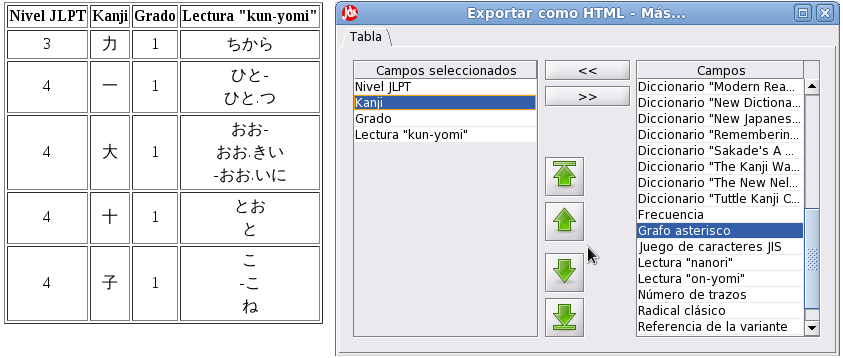
Resultado de la exportación y ventana "Más..." asociada al
estilo Tabla
Las columnas que serán mostradas y su orden pueden ser elegidos una vez haya sido
seleccionado el estilo "Tabla" al pulsar el botón " Más...". Desde la pestaña "Tabla", elija
los campos que quiere que sean mostrados en las columnas seleccionándolos de la lista de la derecha
y pulsando el botón "<<", de forma que los elementos seleccionados pasarán a la
columna de la izquierda. Puede usar los botones de las flechas para establecer el orden horizontal
que ocuparan los elementos seleccionados en la tabla resultante. De la misma manera, puede usar el
botón ">>" para dejar de mostrar los campos selecionados de la lista de la derecha.
-
Tarjeta de estudio: los kanjis son presentados de manera ordenada en sendas tarjetas
de estudio que contienen información básica y fácil de leer sobre los kanjis.
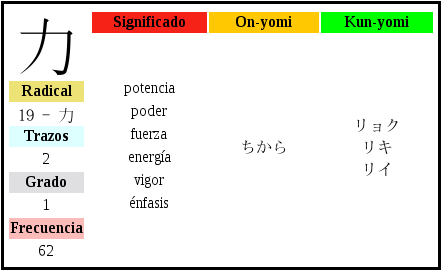
Resultado de la exportación en estilo Tarjeta de
Estudio
Después de seleccionar el formato y el estilo de exportación, podrás seleccionar la ruta
a la cual será exportado el archivo pulsando el botón "…" o escribiéndola en la caja de texto
a la derecha.
Desde el panel "Ordenar por" podemos seleccionar de que forma se ordenarán los
kanjis en el archivo de exportación. Para ello, podremos añadir criterios de ordenación al panel
pulsando el botón añadir, lo que desplegará el diálogo de ordenación.

Diálogo añadir criterio de ordenación
En el primer menú desplegable de "Propiedad" podemos elegir por qué campo de
los kanjis se usará para ordenarlos. Si es necesaria algún tipo de información extra, esta aparecerá
en el siguiente menú desplegable.
En el menú desplegable "Nivel" podemos seleccionar que criterio de ordenación
se usará si dos kanjis son iguales, es decir, si por ejemplo dos kanjis son iguales según el
criterio del nivel uno, se elegirá cual irá antes usando el criterio del nivel dos. Usando este menú
desplegable podemos, además, sustituir un criterio anterior por uno nuevo poniendo como nivel
del criterio que sustituye el nivel del criterio a sustituir.
Desde el menú desplegable "Ordenar según" podemos seleccionar la forma en la que serán
ordenados los kanjis según el campo escogido en el menú desplegable "Propiedad". La forma de
ordenación "Aleatorio" usará la propiedad elegida para generar una ordenación aleatoria
inteligente de los kanjis.
Cada vez que pulsemos el botón "Añadir/Cambiar", un nuevo criterio de
ordenación será añadido a la lista de criterios de ordenación del panel "Ordenar por".
Finalmente, y si deseamos refinar un poco más la ordenación, podemos introducir cambios
manuales de ordenación desde el botón "Reordenar". Al pulsarlo, se desplegará el diálogo
de reordenación manual.
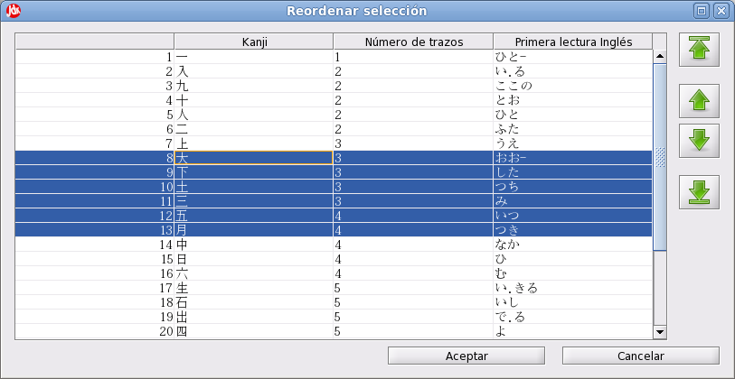
Diálogo de reordenación manual
En el diálogo de reordenación aparecerá una tabla con al menos dos columnas. En la primera,
aparece el orden que estable el ordenamiento automático elegido para cada uno de los kanjis
seleccionados, que aparecen en la segunda columna. En el resto de columnas aparecen las propiedades
que se han seleccionado la tabla de criterio de ordenación ordenadas por niveles.
Si seleccionamos un kanji o un conjunto de kanjis(ya sea uno a uno pulsando sucesivamente CTRL
+ botón izquierdo o todos los kanjis entre dos kanjis seleccionado el primero con el botón
izquierdo del ratón y el segundo con SHIFT + botón izquierdo) y pulsamos los botones de "flecha
arriba" o "flecha abajo", que son los botones de en medio de la parte derecha, subiremos o
bajaremos una posición al kanji o conjunto de kanjis.

Al pulsar el botón "flecha arriba" todo el grupo de
kanjis sube una posición en la tabla.
Si por el contrario, pulsamos los botones "flecha inicio" o "flecha fin" (los
de los extremos de la parte derecha), desplazaremos el conjunto de kanjis al principio o al final de
la lista respectivamente.
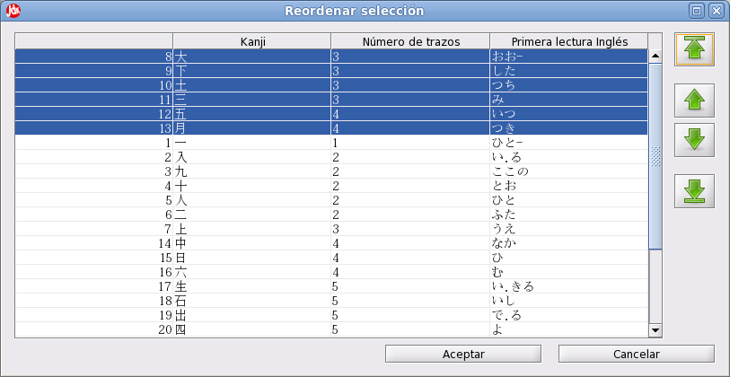
Pulsando el botón "flecha inicio" todo el grupo
asciende hasta la primera posición.
Finalmente, pulsando el botón "Aceptar" la ordenación de exportación será la
elegida en este panel, en caso contrario, si se pulsa "Cancelar", se descartarán los cambios.
¡ATENCIÓN!: si se modifican los criterios de ordenación
automáticos se perderá la cualquier ordenación manual que haya sido hecha anteriormente.
Por último, si pulsamos el botón "Más…" podremos acceder a las opciones
avanzadas de exportación, generalmente propias del formato y del estilo elegidos.
Finalmente, el botón "Exportar" generará el archivo de exportación con los kanjis
seleccionados en el orden seleccionado con las opciones elegidas.
El panel de opciones

Panel de opciones
Pulsando en la pestaña "Opciones" accedemos al panel de configuración de JavaDiKt. Desde aquí
podemos:
-
Configurar el idioma.
-
Cambiar el archivo de la base de datos de
kanjis. Por defecto siempre será <ruta de instalación> + "/dict/kanjidic.jdk".
-
Cambiar el archivo de la base de datos de
trazos. Por defecto siempre será <ruta de instalación> + "/dict/strokedata.txt".
-
Incluir información avanzada en el
diálogo de información de kanjis. Si esta opción está marcada, cuando se solicite información sobre
un kanji se mostrará la ventana de información avanzada en vez de la ventana de información
básica.
-
Buscar en lista extendida de kanjis. Si
esta opción está marcada, cualquier búsqueda incluirá kanjis menos comunes o de idiomas
distintos al japonés.
-
Texto kana romanizado. Si esta opción esta marcada, cualquier texto en
escritura On o escritura Kun será romanizado.
Para guardar una configuración se ha de pulsar el botón "Guardar", tras lo cual la interfaz
del programa se reiniciará con los cambios aplicados.
La ventana de
infomación
Una vez hayamos realizado una búsqueda, si pulsamos sobre cualquiera de los kanjis del panel
de resultados desde la pestaña de "Criterio" o de "Trazos" se abrirá la ventana de información del
kanji. Si la opción "Incluir información avanzada en el diálogo de información de
kanjis" de la pestaña Opciones está marcada, se abrirá la ventana de información avanzada mientras
que en caso contrario se abrirá la ventana con información más resumida.
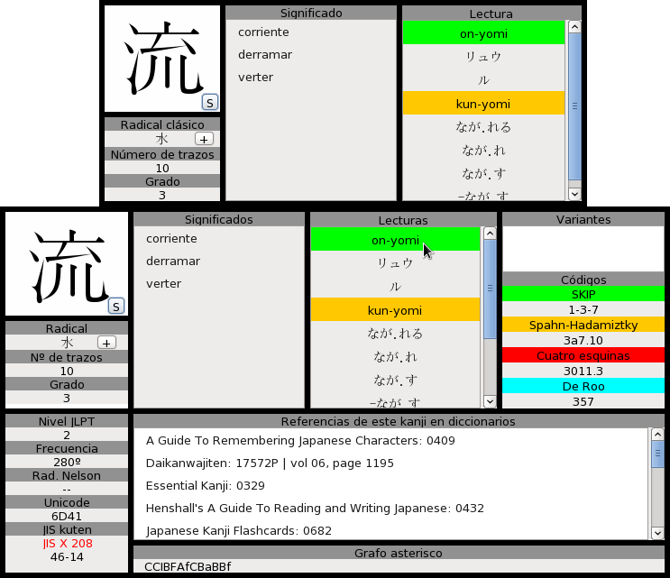
Vista de información básica frente a ventana de información
extendida
Si pulsamos sobre el botón "+" al lado del panel de "Radical" se desplegará la
ventana de información de radical, donde se muestran todas las formas posibles en las que
puede presentarse el radical del kanji en cuestión.
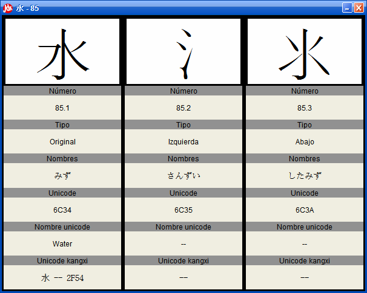
Ventana de información de radical
De la misma manera, si pulsamos el botón "S"
en la esquina inferior derecha del cuadro superior izquierdo, al lado del literal del kanji, se
desplegará la ventana de información de orden de trazos.
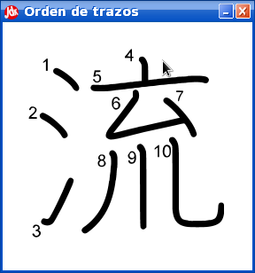
Ventana de orden de trazos
2.Significado
de los campos de los kanjis
Radical clásico
El radical clásico o radical principal de un kanji se define como aquel de los kanjis o grupo significativo de trazos que forma parte de un carácter y que tiene más peso dentro de éste. Si el carácter está compuesto por un único kanji o grupo significativo de trazos, el radical principal de dicho kanji es el propio kanji, como “月” de 月.
Reconocer a un kanji por su radical es evidente más complicado que reconocerlo por su número de trazos dos motivos:
Primero, es difícil definir la expresión “que tiene más peso”. En muchas ocasiones, el elemento de más peso puede considerarse el que más espacio ocupa en un cuadrado imaginario que rodea al kanji, el que está en la posición más privilegiada, el que aporta mayor significado, o el que, en competencia con otros radicales, tiene “prioridad” en la lista oficial.
Y segundo, porque definir “conjunto significativo de trazos” también es complicado. Gran parte de los radicales tienen más de una forma de escribirse, en la mayoría de los casos debido a la simplificación por causa de la escritura rápida.
Aunque reconocer un kanji por su radical no sea necesariamente una tarea sencilla, podemos acotar mucho una búsqueda si logramos averiguarlo. La lista oficial de radicales clásicos contiene 214 radicales, lo que convierte la media de kanjis obtenida al consultar sobre un radical en el diccionario de cuatro mil kanjis a diecinueve por radical aproximadamente (aunque el número de kanjis por radical está muy poco equilibrado).
Por ejemplo, “山” es radical de 岩. Sin embargo es difícil saber por qué “山” es el radical y no lo es “石”. Puede que “山” tenga prioridad sobre “石” por varias razones, como que “山” esté mejor posicionado en la lista oficial, que su significado de “montaña” gane al de “piedra” o que se encuentra más arriba espacialmente que el otro elemento. Este ejemplo deja patente que para diferenciar el radical de un kanji, hay que tener cierta intuición y destreza que se adquiere con la práctica.
Código de Roo
El código de Roo fue presentado por Joshep de Roo en el diccionario 2001 kanji y tiene el objetivo de facilitar la búsqueda de kanjis a principiantes. Tiene la forma NNMM donde NN representa al radical más alto o el más alto a la izquierda y MM representa el radical más bajo o el más bajo a la derecha, ignorando los radicales envolventes más externos. Ambos números han de ser consultados en esta tabla dividida en subgrupos de manera similar al método de las cuatro esquinas. Algunos ejemplos:
生 2472 囚 1262 個 2177 道 979 縫 2755
Nombre del diccionario
Ver “Referencia del diccionario”.
Referencia del diccionario
Muchos autores que escriben diccionarios y guías de estudio sobre kanjis los ordenan por infinidad de criterios, muchas veces prometiendo que es la mejor forma de estudiarlos con nombre sugerentes y pocas consiguiendo su objetivo. La falta de consenso a la hora de ordenar los kanjis para su estudio es grande y prácticamente cada autor que no se atiene a las listas oficiales lo hace de una manera distinta, aunque bien es cierto que en ocasiones ciertos kanjis suelen ocupar posiciones similares en distintas listas, como los numerales o los pertenecientes a días de la semana.
En JavaDiKt pueden hacerse consultas sobre kanjis referentes a los siguientes diccionarios donde han sido recogidos:
A Guide To Reading and Writing Japanese
A Guide To Remembering Japanese Characters
Daikanwajiten
Essential Kanji
Japanese For Busy People
Japanese Kanji Flashcards
Japanese Names
Kanji and Kana
Kanji Basic Book 1&2
Kanji in Context
Kanji Learners Dictionary
Kodansha Compact Kanji Guide
Les Kanjis dans la tete
Modern Reader’s Japanese-English Character Dictionary
New Dictionary of Kanji Usage”
New Japanese-English Character Dictionary
The New Nelson Japanese-English Character Dictionary
Remembering The Kanji
The Kanji Way to Japanese Language Power
Tuttle Kanji Cards
Uso: en la mayoría de los casos, el criterio por referencia del diccionario necesita de ir acompañado por otro criterio del tipo “Nombre del diccionario” para ser útil.
Ejemplos:
-Buscar el kanji 234 del Kanji Basic Book
| - |
Nombre del diccionario |
igual que |
Kanji Basic Book |
| Y |
Referencia del diccionario |
igual que |
234 |
-Buscar todos los kanjis del Kanji Basic Book
| - |
Nombre del diccionario |
igual que |
Kanji Basic Book |
Código cuatro esquinas
El método de las cuatro esquinas fue desarrollado por Wang Yun-Wuu en los años 20 y como su propio nombre indica se basa en el contenido de las esquinas del kanji. El código es de la forma ABCD.n, donde A representa la esquina superior izquierda, B la superior derecha, C la inferior izquierda, D la inferior derecha y .n un punto junto a un número de desambiguación opcionales que hace al código unívoco, similar al del código Spahn-Hadamitzky.
Para conseguir la clave, tenemos que identificar el radical o trazo más cercano a cada una de las esquinas. El número de la esquina es el del elemento de la tabla a continuación que más se parezca a al elemento de la esquina:
0 Sombrero 亠
1 Línea horizontal 一
2 Línea vertical ｜
3 Punto 丶
4 Cruz 十
5 Brocheta キ
6 Caja 口
7 Ángulo 厂
8 Hachi 八
9 Chiisai 小
En realidad el método es complicado, tiene más reglas, puedes verlas aquí. Algunos ejemplos:
仕 2421 行 2122 歴 7121 魚 2733 詞 0762 同 7722 橋 4292
Frecuencia
Los 2500 kanjis más usados en japonés moderno están ordenados unívocamente(es decir, dos kanjis no pueden tener el mismo número de frecuencia) en el campo frecuencia por su posición en el ranking de kanjis más usados según un sondeo realizado entre los periódicos japoneses.
Grado
El campo “grado” hace referencia a la lista a la que el kanji pertenece de las distintas listas oficiales publicadas por distintas administraciones de Japón. Pueden ser del 1 al 10, menos el 7, que no referencia a ningún kanji. Así pues, las equivalencias son:
Aclaración: Existen principalmente dos listas:
- La lista Jōyō kanji es la lista oficial de kanjis de uso común redactada por el ministerio japonés de educación. Redactada y modificada en varias ocasiones, la última, en 2009, comprende los 2131 caracteres más comunes de la vida diaria, los cuales deben ser aprendidos por cualquier japonés que termina la educación secundaria. Cualquier palabra en un texto cuyo alguno de sus kanjis no esté en la jōyō kanji deberá llevar un indicador de pronunciación, también llamado furigana. Existe también la Kyōiku kanji, un subconjunto de la jōyō kanji que divide a 1006 caracteres seleccionados en seis grupos, uno para cada año de la educación primaria.
- La otra lista, la Jinmeiyō kanji, fue redactada por el departamento de asuntos civiles dependiente del ministerio de justicia de Japón, y añade 985 caracteres extra además de los de la lista jōyō kanji que podrán ser usados a la hora de registrar un nombre en el registro civil.
Sobre estas listas de kanji, decir que aunque contienen la mayoría de los kanjis que un japonés podría usar a lo largo de toda su vida, aún hay muchos que perteneciendo a contextos muy específicos como pueden ser la ciencia o la literatura, no están oficialmente registrados.
Grafo Asterisco
Lineas posibles en una representación grafo-asterisco
El modelo grafo-asterisco es una forma de representar un kanji según el orden de dibujo de sus líneas y trazos. En él, se divide a cualquier tipo de trazo en un conjunto posible de 8 tipos de líneas según las direcciones de un asterisco, asignándole a cada una una letra de la A a la H. Por ejemplo, la línea tipo G empieza va desde la parte inferior derecha hasta la parte superior izquierda, mientras que la de tipo C va de la parte superior izquierda hasta la parte inferior derecha. El tipo E representa un punto y generalmente no se usa.
Así pues el primer paso para representar un kanji mediante el modelo grafo-asterisco es separarlo ordenadamente por líneas que se trazarían sin levantar la mano del papel, y luego convertir cada trazo en un conjunto de líneas asterisco. La primera línea de cada trazo se pone en mayúsculas y el resto en minúsculas.
La representación grafo-asterisco obvia la posición relativa de los trazos entre sí, pero hace necesario conocer su orden.
Por ejemplo, consideremos el kanji de cuatro, 四, la forma de obtener su cadena grafo-asterisco sería:
Código Jis Kuten
La agencia japonesa de estandarización(JIS) mediante su especificación JIS X 208:1997 define una lista de 6879 kanji, caracteres katakana, caracteres hiragana y algunos caracteres de otros idiomas como inglés, ruso o griego . La especificación define una tabla de referencias, de forma que cada carácter se identifica por su fila y columna dentro de esa tabla, usando para cada una dos dígitos de la forma “ff-cc”, siendo “ff” la fila y “cc” la columna.
La lista fue ampliada con el estándar JIS X 212:1990, que incluía 6067 caracteres más y que hoy en día está prácticamente en desuso en favor del estándar JIS X 213:2004, que extiende también al estándar JIS X 208 con todos los caracteres contenidos en el JIS X 212 más 952, lo que suman 11233.
El estándar JIS X 213 codifica los caracteres de otra manera, pues divide el conjunto completo en dos planos, donde cada plano es una tabla. Así, la codificación queda de la forma “p-ff-cc”. Dado que los caracteres de JIS X 208 están contenidos en el plano uno, convertir de JIS X 208 a JIS X 212 es tan fácil como añadir un uno delante, quedando “1-ff-cc”.
Aclaración: el estándar definitivo japonés sobre la codificación de kanjis es JIS 213, que incluye en el primer plano, entre otros, todos los caracteres del JIS208, algunos kanjis del JIS212 y los nuevos del propio JIS213 distribuidos entre ambos planos. Así pues, la referencia de código JIS ha de ser interpretada de la siguiente manera:
- Formato “ff-cc”, juego de caracteres JIS208: El kanji está tanto en los estándares JIS208 como JIS213. Su forma para el estándar JIS213 es “1-ff-cc”.
- Formato “p-ff-cc”, juego de caracteres JIS213: El kanji está en el estándar JIS213, no pertenece a JIS208 y quizás también forma parte del JIS212.
- Formato “ff-cc”, juego de caracteres JIS212: El kanji pertenece al estándar obsoleto JIS212, pero no fue incluido en el estándar JIS213.
Uso: para consultas sobre el estándar JIS213 no será necesario, pero si se consulta sobre el estándar JIS208 o JIS212 habrá que añadir necesariamente el criterio “Juego de caracteres JIS” correspondiente.
Ejemplos:
-Buscar un kanji del JIS208 o del JIS213 que también pertenezca a JIS 208
| - |
Juego de caracteres JIS |
igual que |
JIS X 208 |
| Y |
Código JIS kuten |
igual que |
38-17 |
-Buscar un kanji del JIS212
| - |
Juego de caracteres JIS |
igual que |
JIS X 212 |
| Y |
Código JIS kuten |
igual que |
38-17 |
-Buscar un kanji del estandar JIS213 (y que no pertenece al JIS208)
| - |
Código JIS kuten |
igual que |
2-38-17 |
-Buscar todos los kanjis del estandar JIS213
| - |
Juego de caracteres JIS |
igual que |
JIS X 208 |
| Y |
Juego de caracteres JIS |
igual que |
JIS X 213 |
Juego de caracteres JIS
Ver sección “Código JIS Kuten”.
Kanji
Uso: Desde el campo kanji, pueden introducirse a mano el literal del kanji para obtener uno a uno su información.
Ejemplos:
-Buscar los kanjis 行 y 買
| - |
Kanji |
igual que |
行 |
| Ó |
Kanji |
igual que |
買 |
Significado
A cada kanji se le suele atribuir uno o varios significados que se podrían considerar “generales”. Los significados son independientes de los kanjis a los que acompañe en otras palabras o los significados de las palabras a las que represente en las lecturas kun y on,, aunque evidentemente relacionadas. Por ejemplo, el kanji “開” significa el concepto de “abierto”, “desplegado” o “no cerrado”, independientemente de que la palabra “開ける” o “akeru” signifique el verbo “abrir”, o “開店” o “kaiten” signifique “inaugurar un negocio” o “abrir una tienda”. Esto nos ayuda, por ejemplo, a intuir el significado de un kanji o una palabra en función de los kanjis que los componen, posibilitando en muchas ocasiones leer un texto sin saber pronunciarlo todo.
El ordenamiento por significado suele estar implementado solo en diccionarios electrónicos, y no suele ser muy eficiente por los problemas de sinonimia. Si queremos buscar una palabra pensando en un significado cuando realmente en el diccionario está registrado un sinónimo de ésta, nunca obtendremos resultados satisfactorios a pesar de que el resultado sí está registrado. Sin embargo, puede ser útil para sustantivos y palabras muy concretas.
Aclaración: la base de datos de JavaDiKt está basada en un proyecto libre colaborativo en varios idiomas. Eso significa que los campos de significado pueden variar considerablemente de idioma en idioma, e incluso no existir de un lenguaje a otro.
Uso: por culpa de la sinonimia de las palabras y el polimorfismo de las palabras escritas a máquina (por ejemplo, “casa” es igual que “CaSa” para una persona pero no para un ordenador), buscar kanjis por significado puede ser algo engorroso. Por eso, es recomendable escribir siempre en minúsculas (excepto la primera letra de topónimos y nombre comunes) e intentar combinar búsquedas por significado con varios sinónimos.
Ejemplos:
-Buscar el kanji que significa algo relacionado con “niño”
| - |
Significado |
igual que |
niño |
| Ó |
Significado |
igual que |
chaval |
| Ó |
Tipo de lectura |
igual que |
chiquillo |
Nivel JLPT
Algunos kanjis tienen información sobre el nivel del examen JLPT(Japanese Language Proficiency Test), también llamado Nôken, en el que ese kanji es requerido. En total son cuatro niveles, que tienen las siguientes equivalencias en el Marco común europeo de referencia para las lenguas(MECR):
| Nivel Nôken |
MCER |
| 1 |
C2 |
| 2 |
B2 |
| 3 |
B1 |
| 4 |
A1 |
Aclaración: hace poco se añadió un nuevo nivel al JLPT entre los niveles 2 y3, pero la información de los kanjis aún no ha sido actualizada en la base de datos KANJIDIC, lo que significa que esta información se refiere al formato antiguo que ya no existe.
Lectura
Los kanjis japoneses tienen principalmente dos clasificaciones para sus lecturas: las lecturas “kun” y las lecturas “on”. Estos nombres categorizan a las lecturas según sus fonemas procedan del japonés o del chino respectivamente.
Cuando la literatura, la ciencia y la tecnología china entraron en Japón (lo cual incluye a los kanjis), también lo hicieron cientos de palabras de origen chino que en japonés simplemente no existían. Así que lo que hicieron los japoneses fue elegir kanjis para representar sus propias palabras, conservando sus lecturas chinas para palabras que en su idioma no existían. Por ejemplo, en chino Shanghái, la ciudad, se escribe 上海, que se pronuncia “shan-hai”, cuyos kanjis significan tanto en chino como en japonés “encima” y “mar” respectivamente. Los japoneses conservaron la pronunciación “Shanhai” para el nombre de la ciudad, convirtieron la pronunciación de “hai” del segundo kanji en “kai” para otras palabras (como 日本海, “ni-hon-kai” o “mar de Japón”) y asignaron además al kanji la palabra japonesa para mar, ”umi”. Por tanto, las lecturas “on” o chinas de este kanji son “hai” y “kai”, y la lectura “kun” o japonesa es “umi”.
En la mayoría de los casos, aunque con muchísimas excepciones, las palabras de origen japonés suelen estar representadas por un solo kanji y las de origen chino por una composición de éstos. Por lo general es más fácil aprender las pronunciaciones kun de los kanjis porque los vocablos japoneses son más largos y variados que los chinos. Éstos últimos tienden a ser monosílabos y de sonidos alargados, como “shou”, “ryou” o “sei”, de forma que se repiten mucho entre los kanjis. Mientras tanto, los japoneses tienden a ser de dos sílabas con algún fonema fuerte, como “umi”, “sakura”, “kome” o “mado”.
Ocurre muy comúnmente que leemos un kanji del cual conocemos su lectura kun, pero no recordamos su lectura “on”, o no sabemos cuál de sus lecturas on se utiliza en esa palabra en concreto. Buscar en este tipo de casos un kanji por su pronunciación (sobre todo si es kun) suele ser bastante efectivo, aún teniendo en cuenta que el número de palabras homónimas en japonés es enorme.
Otra cosa interesante sobre las lecturas es que, en muchas ocasiones, kanjis compuestos por otros kanjis suelen heredar entera o parcialmente las lecturas “on” de sus radicales. Este hecho es especialmente útil cuando sobre la marcha tenemos que hacer suposiciones sobre cómo se lee una palabra que no entendamos.
Cabe resaltar también que existe otro tipo de lecturas, las lecturas “nanori”, que son pronunciaciones de kanjis generalmente procedentes del japonés y ya en desuso que siguen usándose para leer nombres. La curiosidad en torno a este tipo de lecturas es que en un registro estatal japonés solo está registrado como se escribe tu nombre, no que pronunciación de cada kanji usa. Esto da libertad a los japoneses de elegir según las lecturas de los kanjis que conforman su nombre como quieren que se pronuncien, posibilitando cambios de significado y juegos de palabras.
Aclaración: es común en muchas publicaciones escribir las lecturas “On” de un kanji en katakana y las lecturas “Kun” y “Nanori” en hiragana. Así es como están almacenadas las lecturas en JavaDiKt, lo que significa que cualquier búsqueda de, por ejemplo, una lectura “On” escribiéndola en hiragana será infructífera.
Uso: es conveniente que siempre se añada a un criterio de lectura mediante “Y” un criterio de “Tipo de lectura”, especialmente si queremos diferenciar las lecturas kun de las lecturas nanori. Si no, la búsqueda podría devolver todos los kanjis que tienen cierta lectura, sea nanori, kun u on.
Ejemplos:
-Buscar kanjis cuya lectura kun sea “かう”
| - |
Lectura |
igual que |
かう |
| Y |
Tipo de lectura |
igual que |
kun-yomi |
-Buscar kanjis cuya lectura on sea “ショウ”
| - |
Lectura |
igual que |
ショウ |
| Y |
Tipo de lectura |
igual que |
on-yomi |
-Buscar kanjis cuya lectura sea “かう”, sin importar si es nanori, on, o kun
-Buscar kanjis del grado 1 que tengan lectura on
| - |
Grado |
igual que |
1 |
| Y |
Tipo de lectura |
igual que |
On-yomi |
Tipo de lectura
Ver la sección "Lectura".
Código SKIP
"System of Kanji Indexing by Patterns", o sistema de indexación de kanjis por patrones es un método de catalogación expuesto por Jack Halpern, en su New Japanese-English Character Dictionary. En él, cada kanji queda representado de forma no unívoca(es decir, el código puede ser igual en varios kanjis) por un código de tipo “i-j-k”.
El código “i” viene dado por la forma del kanji. La mayoría de ellos suelen tener lo que podemos considerar “un centro de gravedad” que diferencia a dos conjuntos de trazos/radicales espacialmente y que, generalmente, son no conexos o no se cruzan. Si la diferencia es izquierda-derecha, i=1, si es arriba-abajo, i=2; y si es núcleo-envoltura, i=3. En caso de que, por ejemplo, todos los trazos/radicales sean conexos o se crucen, o el kanji sea de simetría tal que no permita diferenciar ninguno de los casos anteriores, i=4.
Si i es igual a 1,2 o 3, “j” es el número de trazos de la parte izquierda/superior/envoltura y “k” es el número de trazos de la parte derecha/inferior/núcleo.
Por el contrario, si i es igual a 4, “j” será el número total de trazos del kanji y “k” dependerá de si tiene una línea horizontal en la parte superior (k=1), si la tiene en la parte inferior (k=2), si tiene una línea vertical en el centro (k=3) o ninguna de las anteriores (k=4).
Lo bueno de este método es que no requiere conocimientos sobre radicales, solo saber contar trazos y reconocer el centro de gravedad, que suele ser fácil.
Algunos ejemplos:
行 1-3-3 引 1-3-1 相 1-4-5 時 1-4-6 八 1-1-1 噛 1-3-12
学 2-5-3 見 2-5-2 京 2-2-6 分 2-2-2 二 2-1-1 字 2-3-3 春 2-5-4.
気 3-4-2 週 3-3-8 広 3-3-2 問 3-8-3 国 3-3-5 月 3-2-2 通 3-3-7
下 4-3-1 西 4-6-1 士 4-3-2 自 4-6-2 中 4-4-3 事 4-8-3 火 4-4-4 女 4-3-4
Código Spahn-Hadamitzky
El código Spahn-Hadamitzky es un método de búsqueda de kanjis propuesto en el diccionario The Kanji Dictionary, de Mark Spahn y Wolfgang Hadamitzky. Se basa en la búsqueda del radical y la referenciación, por lo que requiere más preparación que otros métodos como SKIP.
Dado un kanji, identificamos su radical principal y contamos su número de trazos, que será el primer elemento de la clave. Luego vamos a esta tabla(sin variantes) o a ésta(con variantes) e identificamos el kanji por el número de trazos, obteniendo una letra, que será el segundo elemento de la clave. Finalmente, contamos el número de trazos no pertenecientes al radical y lo añadimos al final, obteniendo así el código no unívoco que identifica el kanji.
En el diccionario The Kanji Dictionary, el código se convierte en unívoco al recibir secuencialmente sin usar ningún criterio en particular números a partir del 1 todos los kanjis pertenecientes al mismo grupo. Algunos ejemplos:
十 2k0.1 遅 2q9.17 師 3f7.2 則 7b2.1 貨 7b4.5
Número de trazos
El número de trazos es el número de líneas que tiene un kanji, entendiendo como línea cualquier elemento del kanji que sea dibujado sin levantar el lápiz del papel.
La lista de trazos posibles para un kanji es finita, conocida y lo suficientemente abarcable como para que cualquier estudiante de primer grado no tenga excesivos problemas en contar los que cualquier carácter contiene. Las excepciones son escasas y es un método seguro pero poco eficiente para acotar una búsqueda.
Uso: el número de trazos suele ser extremadamente útil en complemento con otros criterios para acortar una búsqueda, igual que también puede ser útil para hacer búsquedas sobre kanjis borrosos o mal escritos en el que no podamos distinguir exactamente el número de trazos, pero podamos acotarlo.
Ejemplos:
-Buscar kanjis con un número de trazos mayor que 13 y menor que 15 cuyo radical sea “女”
| - |
Número de trazos |
mayor o igual que |
13 |
| Y |
Número de trazos |
menor o igual que |
15 |
| Y |
Radical clásico |
igual que |
038 – 女 |
Unicode
El número Unicode de un kanji es el índice del carácter en el estándar ISO 10646-1 que es parecida a la especificación Unicode con la diferencia fundamental de que éste último solo permite codificaciones de 16 bits, es decir, valores numéricos para los caracteres desde el 0 al 65536, mientras que el ISO 10646-1 permite codificaciones desde 0 a 4294967296 usando 32 bits. Absolutamente todos los kanjis de JavaDiKt tienen un código Unicode y todos son distintos. Cada índice Unicode reconoce al kanji de manera clara, limpia y unívoca y por eso pueden ser bastante útiles a la hora de de intercambiar rápidamente referencias sobre kanjis.
Aclaración: todos los códigos Unicode de JavaDiKt están presentados en hexadecimal.
Referencia de la variante
Para ciertos kanjis existen otras versiones relacionadas y parecidas en forma, significado y/o lectura llamadas “variantes”. Generalmente suelen ser representaciones más antiguas del mismo kanji que con el paso del tiempo han ido simplificándose o cambiando de forma de alguna manera. Debido a esto, es bastante común que la relevancia de un kanji en el idioma moderno difiera mucho de la de sus variantes. Por ejemplo, el kanji 四 que tiene una frecuencia tan alta como 47 tiene como variante 亖, que ni siquiera está en el estándar JIS213.
Aclaración: la función de búsqueda por referencia en JavaDiKt está en proceso de desarrollo y por lo tanto no funciona todo lo bien que uno cabría esperar.
Uso: al igual que otros criterios, es necesaria la combinación de este tipo de criterio con el criterio “Tipo de variante”. Sin embargo, aquí el tipo de variante tiene que ser escrito explícitamente en el código interno que usa el programa, por lo que la calidad de la búsqueda es muy deficiente. Los tipos de variantes posibles son los siguientes:
jis208
jis212
jis213
ucs
s_h
nelson_c
deroo
njecd
oneill
La utilidad principal de este tipo de información radica en encontrar las variantes del kanji usando otro criterio. Si por ejemplo un kanji especifica que tiene una variante con código JIS212 igual a 18-88, podemos usar los criterios “Código JIS” y “Juego de caracteres JIS” para encontrar dicho kanji.
Ejemplos:
-Buscar kanjis que tengan como variante un kanji cuyo código JIS212 sea 18-88
| - |
Referencia de la variante |
igual que |
18-88 |
| Y |
Tipo de variante |
igual que |
jis212 |
Tipo de variante
Ver sección “Referencia de la variante”.